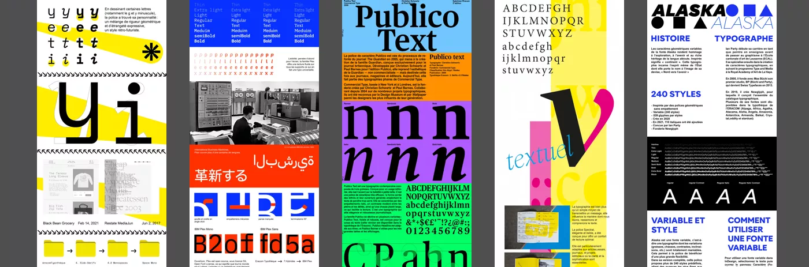

Durant l’année 2022-23, dans l’objectif de faire connaître la nouvelle typothèque de l’Eracom, deux classes réalisent une newsletter hebdomadaire qui fait découvrir chaque semaine une fonte typographique, à travers un visuel original et informatif.
Voir la série 1En automne 2023-24, une deuxième série comptant 21 spécimens typographiques est réalisée par deux nouvelles classes.
 Voir la série 2
Voir la série 2
En automne 2025, une nouvelle série de 15 spécimens typographiques est réalisée. Chaque spécimen est décliné aux formats newsletter, réseaux sociaux et écrans d’information. Cette nouvelle série débutera prochainement sa diffusion durant l’hiver 2025-2026.
 Voir la série 3Au cours de ces trois séries, 48 spécimens ont été produits, ce qui représente 37% des familles typographiques composant la Typothèque.